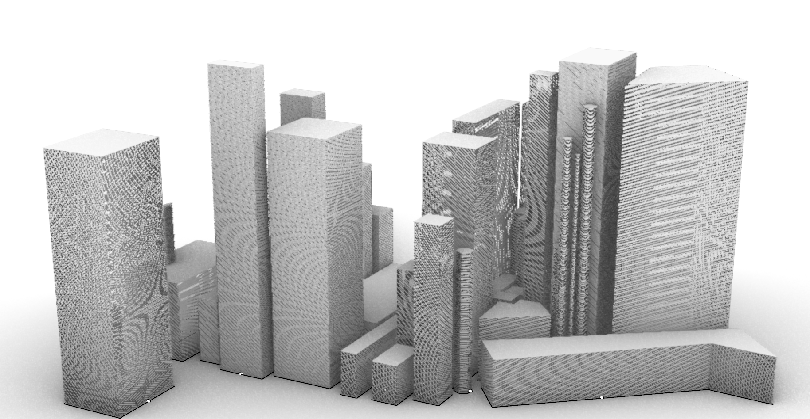
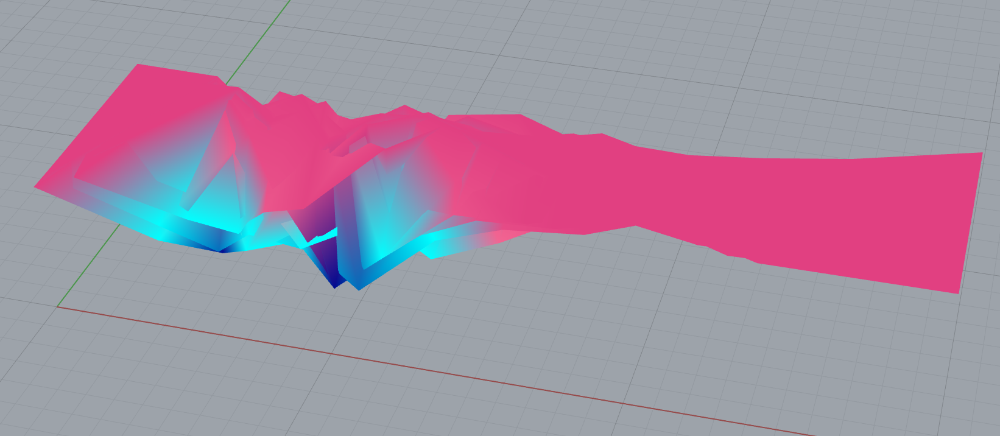
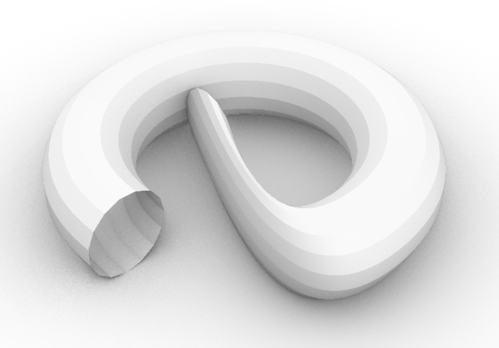
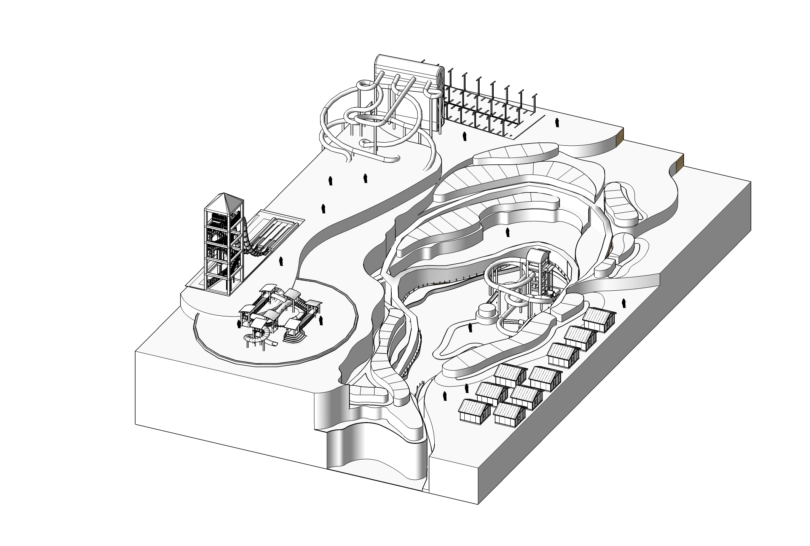

To conceptualise the change of a city from one of a barren, old and boring mining town, to a state of the art desert city, I created the following photoshop item below. (This photoshop in corporates my Rhino/Grasshopper models whislt the home page incorporates pictures being edit).
This conceptual piece, showcases 3 items created in Rhino/Grasshopper. First, the parametric city build which is prodominetly white whislt being complimented witha real life picture of the Dallas city on its right. There are some smooth and soft cracks of light that squeeze through the gaps of the ciites silhouette providing a mixture of light and shadow formed by the skyline. Moreover, these buildings aren't facing the sun as, (even though I didn't edit it in) the solar panels are absorbing the UV rays providing the power needed for the city to run. Secondly, in the quarry, there are two more Rhino/Grasshopper builds. These are the swirls and the abstract like parametric floor. The floor resembles the quarry and how it used to be a deep source of financial security, but now the abstract design of it being extruded downwards like a mine, but however now, being colourful it resmebles a new source of finance, in a more oppuruntisitc platform for the town's citizens. The colourful swirls resemble the waterparks many curved parametric slopes and drops of the slides.
The parametric city:
The quarry:
The swirl:
And, just one other conceptual drawing showing the placement of slides and the whole waterpark among the old quarry:
